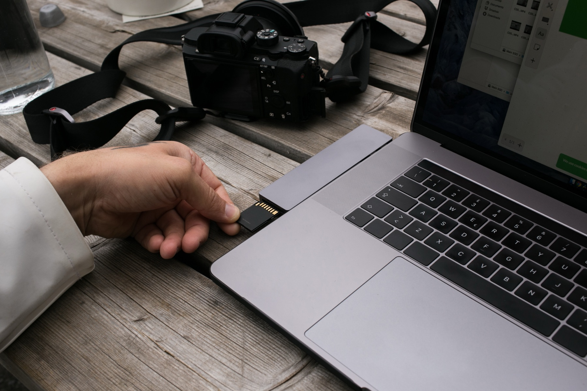
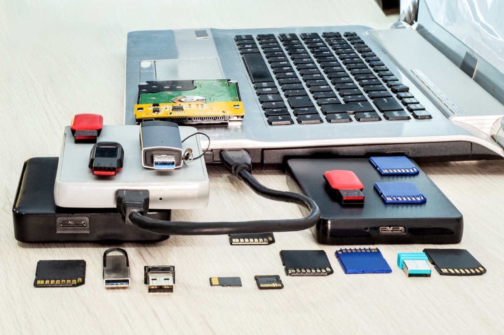

For video creators, on the Mac
Every clip from the card to the archive, accounted for.
MediaFlowSwift keeps track of the footage from a shoot. Import from cards, phones and folders; sort, rate and review; copy everything into a tidy folder structure ready for editing; free up space only once each copy is proved; archive; publish.
Download the free trial See the plansmacOS 14 or later, on a Mac with Apple silicon. Fourteen days of the full app, no card; then $4.99 or $9.99 a month.

- 01ImportCards, USB drives, folders, iPhone and cameras over USB
- 02CategorizeYour own categories, with suggestions if you want them
- 03ReviewFrame-accurate preview, stars, tags and notes
- 04OrganizeCopied into category folders at the project’s destination
- 05Free up spaceWorking copies removed only after the copy is proved
- 06ArchiveTo numbered drives, with a record of what is where
- 07EjectCards and drives still connected, ejected with one click
How it works
A strip under the toolbar follows the seven steps of a shoot and always offers the one next action. You never have to remember where a project stands: the strip shows what is still waiting at each step, and a finished step shows a check. When the video is cut, Studio Pro drafts its title, description, chapters and tags from what you say and uploads it to YouTube with your thumbnail.

Projects that know where their footage is
Each project records its destination folder — a network share, an external drive or a folder on the Mac — and every clip’s place: on the card, in a working copy, at the destination, or archived. Move a library to a new drive and one command points every project at it.
Copies that are proved before anything is removed
Freeing up space, moving a project, returning it from an editing drive: whenever a copy is followed by a removal, the copy is checked against the original first. If it does not match, nothing is removed.
An editing drive for the fast work
Move a project to a fast SSD for editing and bring it back to the library afterwards, with everything you changed carried across and checked.
Proxies over the network
Footage that lives on a network share can be choppy to scrub. MediaFlowSwift offers to make a proxy for the clip you are looking at, or for every clip that needs one.
A shared database, when you want one
Search across projects, find duplicates, and see the same project list from every Mac in the studio — a single file, or a database server on your own network.
Reports and hand-off
PDF, HTML and CSV reports of what was shot, what was kept and where it went, for your editor or your records.
What it will not do
Plans
Two plans, monthly or yearly. Try the full app free for 14 days first: download it, no card needed, and buy when you are ready.
All the file management
- Import from cards, phones and folders
- Categorize, review, rate, tag
- Organize to the destination, proved copies
- Free Up Space, Archive and restore
- Proxies, editing drive, Library Moved
- Reports, Help, updates, problem reports
… a month
Studio, plus publishing and the studio database
- Everything in Studio
- Titles, descriptions, chapters and tags drafted for you
- Upload to YouTube with thumbnail and schedule
- Results read back from YouTube
- Shared database server across your Macs
… a month
Prices are shown in your local currency; tax is added at checkout where it applies. Payment is handled by Paddle, our merchant of record; your licence key is shown as soon as the payment goes through and is also on your receipt. One plan covers one person on up to three Macs.
Studio and Studio Pro, side by side
| What you can do | Studio | Studio Pro |
|---|---|---|
| Getting footage in | ||
| Import from SD cards, USB drives and folders | ✓ | ✓ |
| Import from iPhone and cameras over USB | ✓ | ✓ |
| Clear Card after every clip is proved copied | ✓ | ✓ |
| Sorting and reviewing | ||
| Categories, tags, notes, star ratings, selects | ✓ | ✓ |
| Frame-accurate preview, Rapid Review, undo | ✓ | ✓ |
| Category suggestions from a model on your Mac or a provider you choose | ✓ | ✓ |
| Speech transcripts, place names, weather, shoot map | ✓ | ✓ |
| Keeping it safe | ||
| Organize to the destination folder, every copy proved | ✓ | ✓ |
| Free Up Space, only after proof | ✓ | ✓ |
| Archive to numbered drives, restore, relink | ✓ | ✓ |
| Proxies for footage on a network share | ✓ | ✓ |
| Editing drive: move a project to a fast SSD and back | ✓ | ✓ |
| Library Moved: point every project at a new drive | ✓ | ✓ |
| PDF, HTML and CSV reports | ✓ | ✓ |
| Publishing | ||
| Title, description, chapters and tags drafted and revised for you | — | ✓ |
| Upload to YouTube with thumbnail, schedule and visibility | — | ✓ |
| Results read back from YouTube: views, watch time, subscribers | — | ✓ |
| Working across Macs | ||
| Shared database as a single file | ✓ | ✓ |
| Shared database server: the same projects list on every Mac, search across projects, duplicates | — | ✓ |
| Always included | ||
| Help, the online manual, updates, problem reports, email support | ✓ | ✓ |
| 14-day trial of Studio Pro, no card | ✓ | ✓ |
When a plan ends, MediaFlowSwift keeps opening every project and keeps showing where every clip is; restoring from an archive and copying footage out always work. Only new imports, proxies, publishing and the shared server pause.